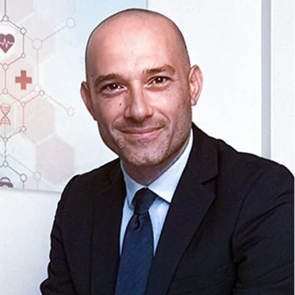

Alberto Monello
Fisiatra presso Poliambulatorio Medico Klinè (CT). Ecografista presso Studio di diagnostica per immagini X-Ray (Paternò-CT)
- Ginocchio: anatomia base
- Caviglia e Piede: anatomia base
- Basi di refertazione: linee guida, modelli di refertazione e glossario
- Up to date: evidenze scientifiche sull'utilizzo dell'ecografia in ambito di diagnostica muscoloscheletrica